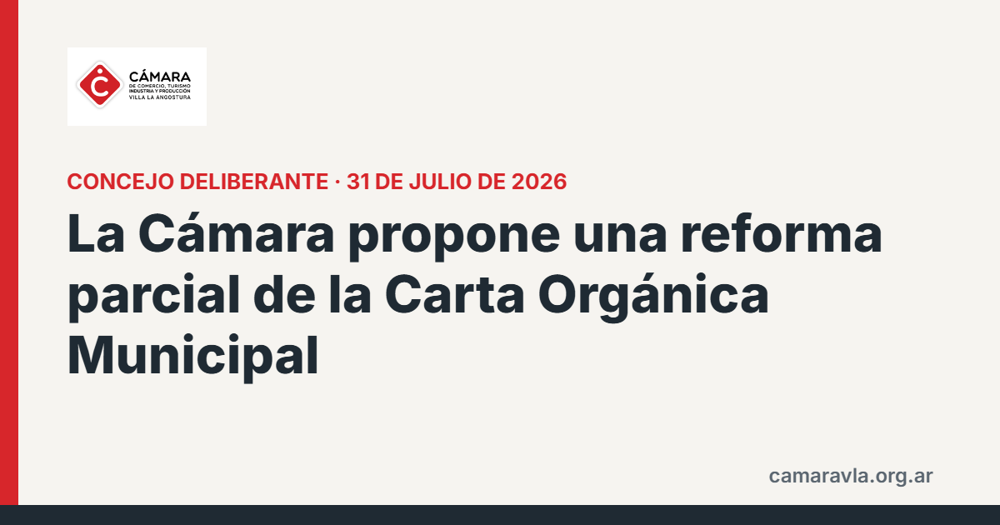

La Cámara propone una reforma parcial de la Carta Orgánica Municipal
Presentó en el Concejo Deliberante un proyecto de ordenanza que declara la necesidad de reformar parcialmente la Carta Orgánica de 2009, con cuatro ejes y una Convención Municipal Constituyente de 14 convencionales.

Los cuatro ejes: modernizar el régimen de compras y contrataciones y la transparencia, reemplazando la publicidad en papel por herramientas digitales; dar consecuencias efectivas al incumplimiento de las obligaciones de publicar información y rendir cuentas; definir quién garantiza el cumplimiento de la propia Carta; y revisar el régimen electoral, incluida la fecha de los comicios municipales respecto de los provinciales, con neutralidad para los mandatos en curso. El análisis identificó más de treinta artículos a revisar. La ordenanza declarativa requiere dos tercios del Concejo y prevé elegir los convencionales dentro de los 120 días de promulgada.
Fuentes: La Angostura Digital, 31/07/2026 · Diario Andino, 31/07/2026 · Entrevista en La Angostura Digital, 06/08/2026
Compartí esta nota: https://camaravla.org.ar/noticias/2026-07-reforma-carta-organica